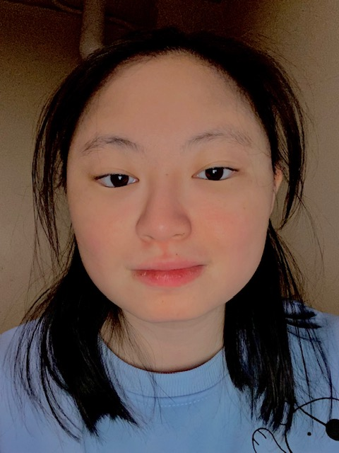

Hi! My name is Rachel Ren and I am a junior studying Information Science. Some of my interest are listening to music, playing games, and watching shows. I took this class because I want to learn more about HTML and web development. My favorite 'tech' thing is my gaming keyboard. One hero that currently inspire me is Alan Turning.
My Name is Nsikan Morgan, I am an Information Science major, and I am from Milwaukee Wisconsin. As of right now I don't really have a tech hero. My favorite tech thing is the Apple Vision Pro. I like the Apple Vision pro because even though the technology isn't really that good in the present day, I have seen the potential of what it will be in 5 - 10 years when the goggles are lighter and have more functions.